Conceito — o túbulo proximal e seus diuréticos, ilustrado
O proximal é a usina de reabsorção — homeostasia em massa. Recupera a
maior parte do que foi filtrado — Na, glicose, bicarbonato, aminoácidos — para manter o meio interno
(homeostasia) antes do ajuste fino adiante. As Fig. 1–13 voltam no Caso,
na Trilha e na Avaliação (algumas reaparecem nos exercícios). Atribuição em CREDITS.md (em
curadoria).
1. Reabsorção isosmótica — 65% do Na
O TCP reabsorve ~65% do Na filtrado, e a água segue por osmose: o filtrado que sai dele é isosmótico. O que o proximal não pegar, chega à alça.

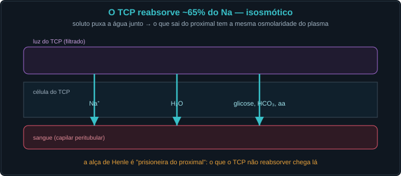
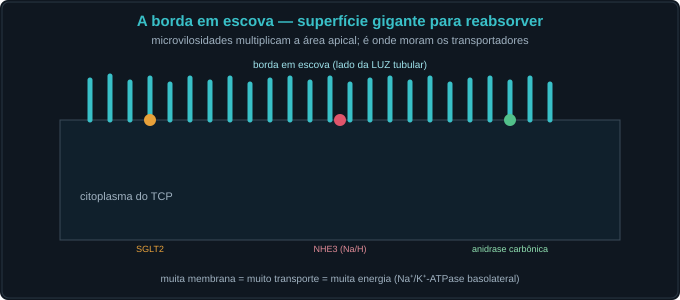
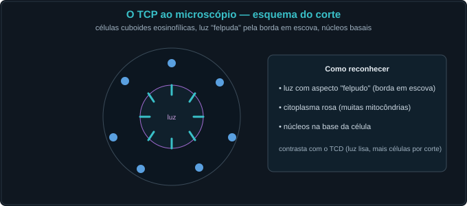
2. Glicose e o SGLT2 — o limiar e a chave SGLT2i
O SGLT2 (S1) reabsorve ~90% da glicose acoplada ao Na. Há um Tm: acima do limiar (~180–200 mg/dL) aparece glicosúria. O SGLT2i (empagliflozina 10–25 mg/dia) derruba o Tm.
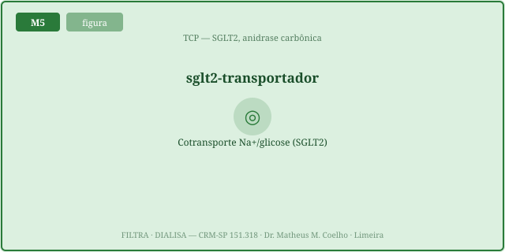
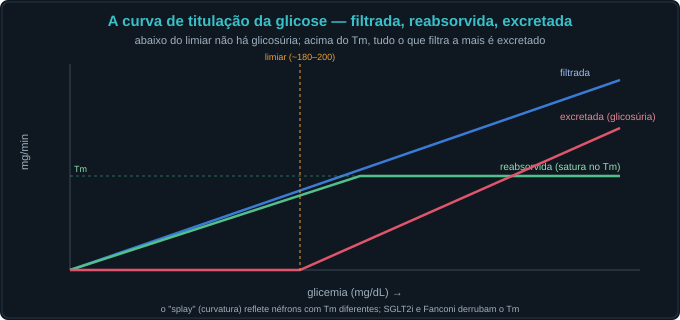
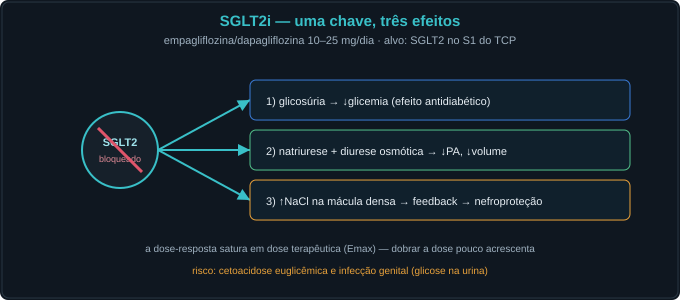
3. Bicarbonato e a anidrase carbônica — a acetazolamida
O HCO₃ filtrado é recuperado no TCP pela anidrase carbônica (via NHE3). A acetazolamida (250–500 mg/dia) a inibe → bicarbonatúria → acidose metabólica + natriurese leve.
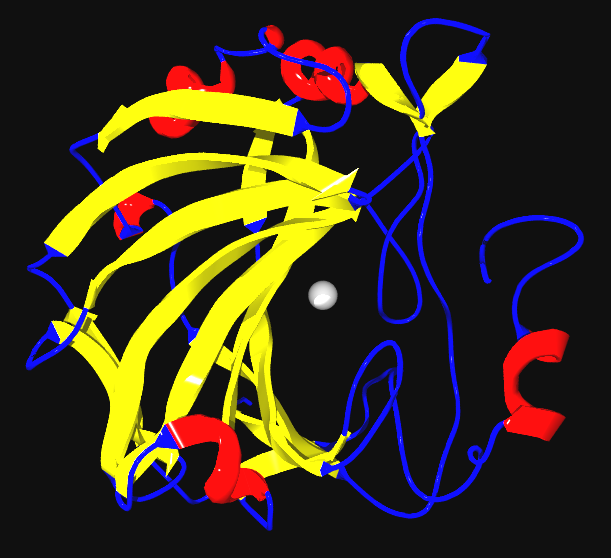
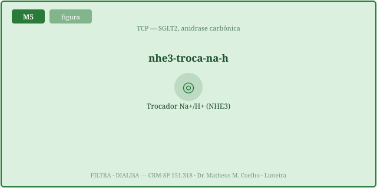
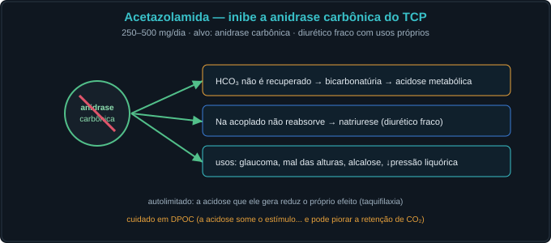
4. Manitol e a curva dose-resposta
O manitol (0,25–1 g/kg) é filtrado e não reabsorvido → segura água na luz (diurese osmótica). E todo fármaco aqui obedece a uma curva dose-resposta (Emax) com teto.
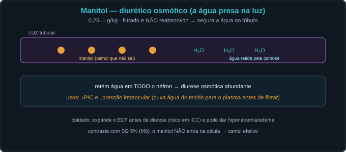
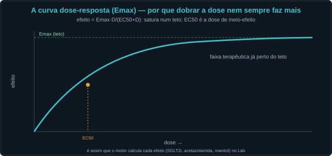
5. Quando o proximal inteiro falha — Fanconi
Se o TCP adoece como um todo, vaza tudo: glicosúria normoglicêmica, bicarbonatúria (ATR tipo 2), fosfatúria, aminoacidúria.
Caso — oito atos, decida antes de revelar
Diabético tipo 2, ICC e DRC leve. Decidimos otimizar a terapia agindo no túbulo proximal.
Trilha socrática — treze perguntas que constroem o conceito
1. Quanto Na o TCP reabsorve?
~65% do filtrado, de forma isosmótica (a água acompanha). É a maior alavanca de volume do néfron.
2. Por que "a alça é prisioneira do proximal"?
Porque o que o TCP não reabsorver chega à alça; mexer no proximal muda a carga entregue a todos os segmentos seguintes.
3. O que faz o SGLT2?
Cotransporta Na e glicose no S1; reabsorve ~90% da glicose filtrada, aproveitando o gradiente de Na.
4. O que é o limiar de glicose?
A glicemia (~180–200 mg/dL) em que a glicose filtrada supera o Tm e começa a glicosúria. limiar = Tm/TFG.
5. Como o SGLT2i age?
Empagliflozina 10–25 mg/dia bloqueia o SGLT2 → derruba o Tm → glicosúria mesmo normoglicêmico → ↓glicemia, natriurese e nefroproteção.
6. Por que dobrar a dose do SGLT2i rende pouco?
A curva Emax tem teto; em dose terapêutica já se está perto do platô (efeito = Emax·D/(EC50+D)).
7. Como o TCP recupera o bicarbonato?
Pela anidrase carbônica: o H⁺ secretado (NHE3) combina com o HCO₃ filtrado; dentro da célula gera-se novo HCO₃ que volta ao sangue.
8. O que faz a acetazolamida?
250–500 mg/dia inibe a anidrase → bicarbonatúria → acidose metabólica + natriurese leve (diurético fraco).
9. Por que a acetazolamida é autolimitada?
A acidose que ela cria reduz o HCO₃ filtrado disponível → o efeito diurético cai com o tempo (taquifilaxia).
10. Como o manitol faz diurese?
0,25–1 g/kg: filtrado e não reabsorvido, retém água na luz por osmose (diurese osmótica); também puxa água do tecido (↓PIC).
11. O que é a curva dose-resposta?
efeito = Emax·D/(EC50+D): EC50 é a dose de meio-efeito; o efeito satura num teto (Emax). Vale para todos os diuréticos.
12. O que é a síndrome de Fanconi?
Disfunção global do TCP: glicosúria normoglicêmica + bicarbonatúria (ATR tipo 2) + fosfatúria + aminoacidúria.
13. Em que sentido isto é homeostasia?
O proximal recupera em massa o que serve (Na, glicose, HCO₃) para manter o meio interno; os fármacos reescrevem essa recuperação, ponto a ponto.
Instrumento — a curva de titulação da glicose
Os controles do Lab alimentam esta curva: filtrada (azul), reabsorvida (verde, satura no Tm) e excretada (vermelha). Ligue o SGLT2i ou o Fanconi e veja o Tm — e o limiar — caírem.
Laboratório — o proximal e seus fármacos (dose computada)
| Variável | Atual | Comentário |
|---|---|---|
| Tm glicose (mg/min) | — | normal 375 |
| Glicose filtrada (mg/min) | — | GFR·glicemia/100 |
| Glicose excretada (mg/min) | — | 0 abaixo do limiar |
| Limiar de glicose (mg/dL) | — | Tm/TFG·100 |
| HCO₃ plasmático resultante (mmol/L) | — | acidose se ↓ |
| Reabsorção de Na no TCP | — | ~65% |
| Índice de diurese | — | 1 = basal |
| Padrão dominante | — | — |